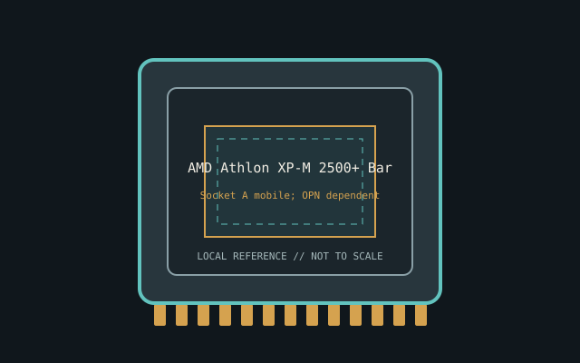

[ INDIVIDUAL CPU COMPONENT ]
AMD Athlon XP-M 2500+ Barton
Mobile Barton, 2003; 1C/1T, nominal 1.866 GHz, 512 KB L2, 266 MT/s bus Model-specific record; confirm the complete part marking before installation.

IDENTIFICATION: AMD Athlon XP-M 2500+ Barton. Product name alone does not establish package, stepping, voltage or firmware compatibility.
Verified model specifications
| Catalog path | Amd → AMD K7 / Athlon XP |
|---|---|
| Model and compute | Mobile Barton, 2003; 1C/1T, nominal 1.866 GHz, 512 KB L2, 266 MT/s bus |
| Package / socket | Socket A mobile; OPN dependent |
| Compatibility | Desktop Socket A support not guaranteed; verify BIOS/voltage/multiplier |
| Stepping and variants | Multiple OPN/thermal variants; full AXMH/AXMD code |
Compatibility and service
- Desktop Socket A support not guaranteed; verify BIOS/voltage/multiplier
- Multiple OPN/thermal variants; full AXMH/AXMD code
- Preserve OPN; mobile profile may be BIOS-configurable
- Confirm board manual, exact CPU support list, firmware, voltage/power, memory and cooling before use; never force a package.
Service & archival notes
Preserve OPN; mobile profile may be BIOS-configurable
Photograph package, markings, contacts and date/lot codes before repair. Log host board, BIOS/microcode, memory, cooler, condition, provenance and source revision.
Sources & further reading
- AMD processor specifications — AMD Athlon XP-M 2500+ BartonManufacturer catalog; search exact model and OPN.
- AMD support documentationManufacturer platform documents; verify motherboard BIOS separately.
Manufacturer documents take precedence. Family-level references may not resolve every stepping; verify the marking and motherboard CPU list.